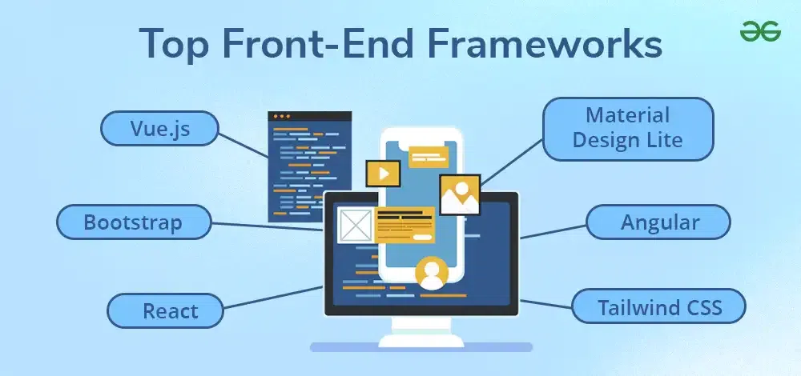
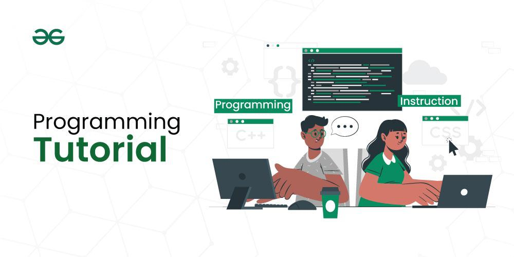
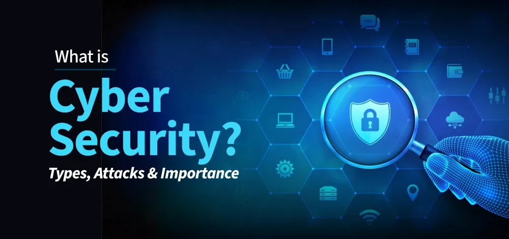

Welcome to Franziezone IT courses page.🤩
This is where you can develop your skills and stay up-to-date with the latest technologies.Our courses cover a wide range of topics, from programming and web development to cybersecurity and data science. Browse our course catalog and start learning today. Whether you're a beginner or an experienced professional, our courses are designed to help you stay ahead of the curve and achieve your career aspirations.
Web Development
Web development is the process of creating, building, and maintaining websites and web applications. It involves everything from web design to programming and database management. Web development is generally divided into three core areas: Frontend Development, Backend Development, and Full Stack Development.
Frontend Development
Frontend development refers to everything that users see and interact with on the website. It involves the design, structure, and layout of the website and is often referred to as the ‘client side’ of an application.
Backend Development
Backend development refers to the server side of a website, where the logic and data are processed and stored. Users do not directly interact with this part, but it ensures that the website works properly.

Full Stack Development
Full-stack development refers to the practice of developing both the frontend and backend of a website or web application. Full-stack developers have a deep understanding of both areas and can build end-to-end solutions.
Click on the link down here 👇 for more
https://www.geeksforgeeks.org/web-development/
Tutorials under Webevelopment are below:
Programming Tutorial | Introduction, Basic Concepts, Getting started
This comprehensive guide of Programming Tutorialor Coding Tutorial provides an introduction to programming, covering basic concepts, setting up your development environment, and common beginner problems. Learn about variables, data types, control flow statements, functions, and how to write your first code in various languages. Explore resources and tips to help you to begin your programming journey. We designed this Programming Tutorial or Coding Tutorial to empower beginners and equip them with the knowledge and resources they will need to get started with programming.
What is Programming?
Programming, also known as coding, is the process of creating a set of instructions that tell a computer how to perform a specific task. These instructions, called programs, are written in a language that the computer can understand and execute.
Click on the link down here 👇 for more
https://www.geeksforgeeks.org/programming-tutorial/
Tutorials under programming are below:
What is Cyber Security? Types, Importance & How to Stay Safe (2025 Guide)
Cyber security is the practice of protecting digital devices, networks, and sensitive data from cyber threats such as hacking, malware, and phishing attacks.” It involves a range of strategies, technologies, and best practices designed to safeguard computers, networks, and data from cyber attacks.
What is Cyber Security? (Definition & Importance)
Cybersecurity is all about protecting your computer, phone, or any digital device from hackers and online threats. It keeps your personal information, bank details, files, and online activity safe from being stolen, damaged, or misused. By acquiring knowledge of cyber attacks and cyber security we can secure and defend ourselves from various cyber attacks like phishing and DDoS attacks.
Why is Cybersecurity is Important?
Cyber Security is important because the government, corporations, and medical organizations,collect military, financial, process, and store unprecedented amounts of data on a computer and other properties like personal information, and this private information exposure could have negative consequences. In 1972, when the internet was just starting (called ARPANET at the time),a test virus named Creeper was created—and then another program called Reaper was made to remove it. This early experiment showed why digital security was needed and helped start what we now call cybersecurity.
Click on the link down here 👇 for more
https://www.geeksforgeeks.org/what-is-cyber-security/
Tutorials under cybersecurity are below: